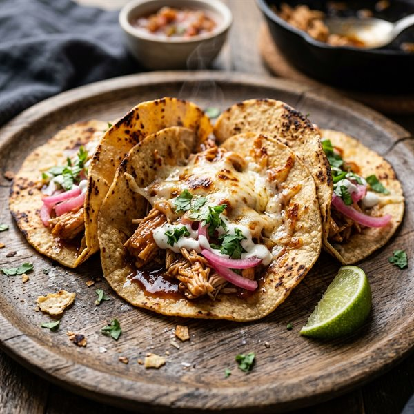

15-Minute Meals

15-Minute Crispy Honey Chipotle Chicken Tacos
Juicy shredded chicken glazed in sweet and smoky honey chipotle adobo, pan-crisped in warm corn tortillas with bubbly melted pepper jack cheese, pickled red onions, and lime crema in 15 minutes.